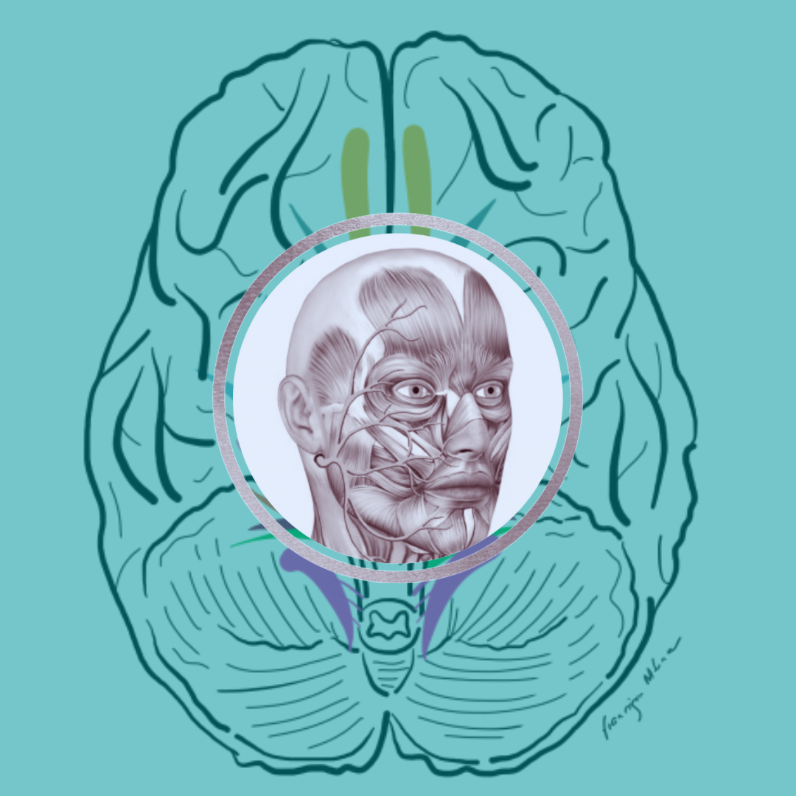
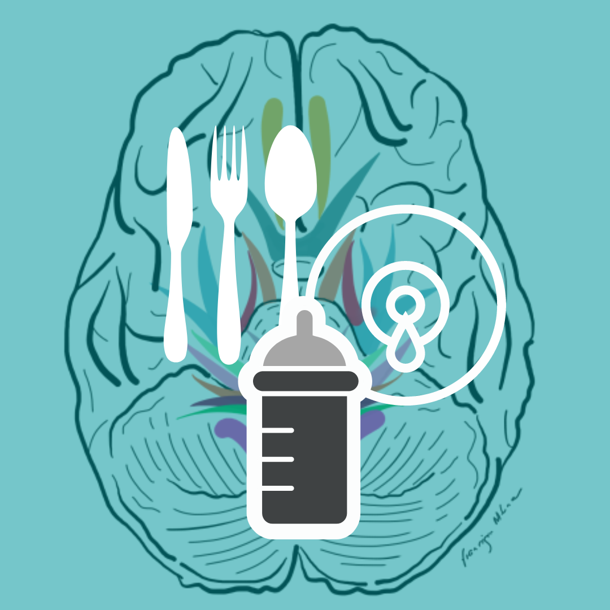
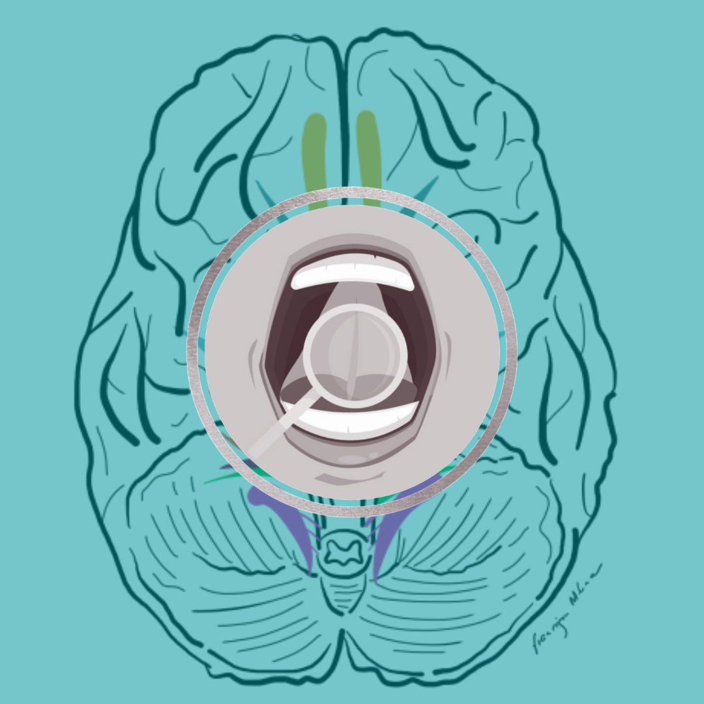
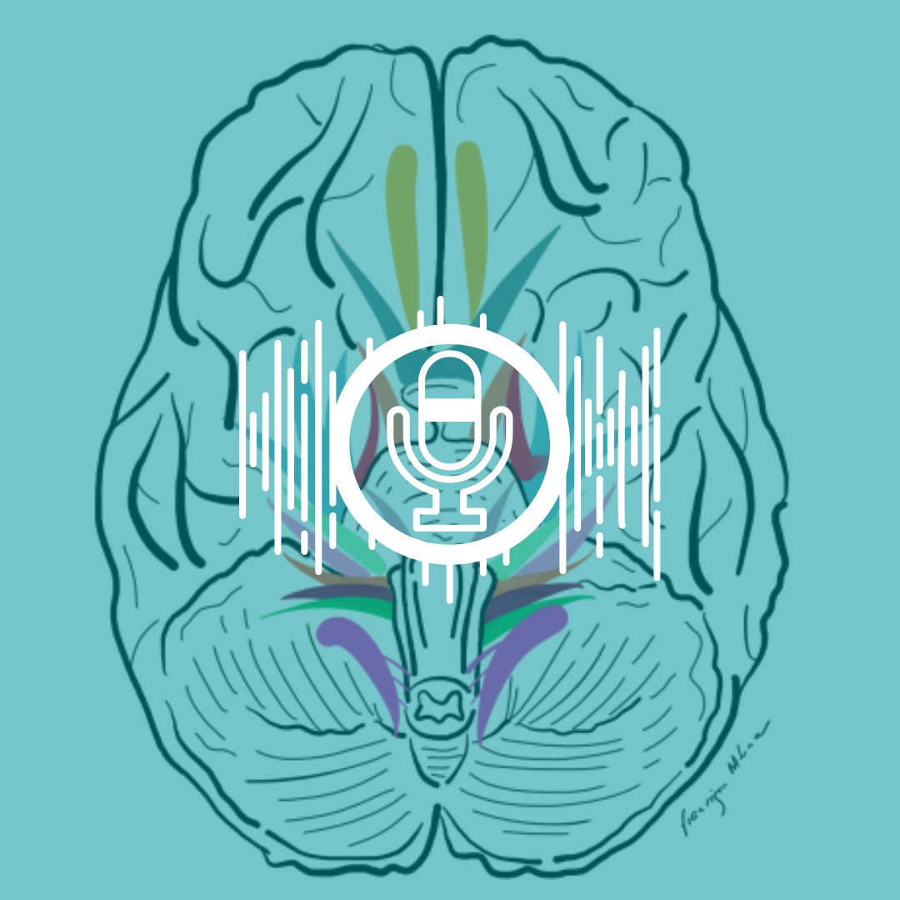
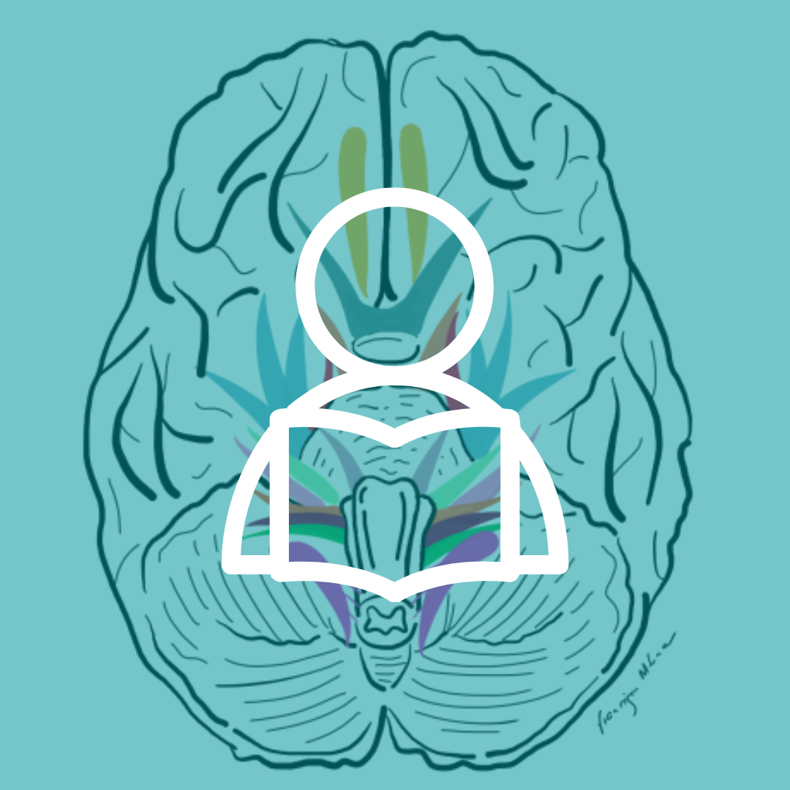
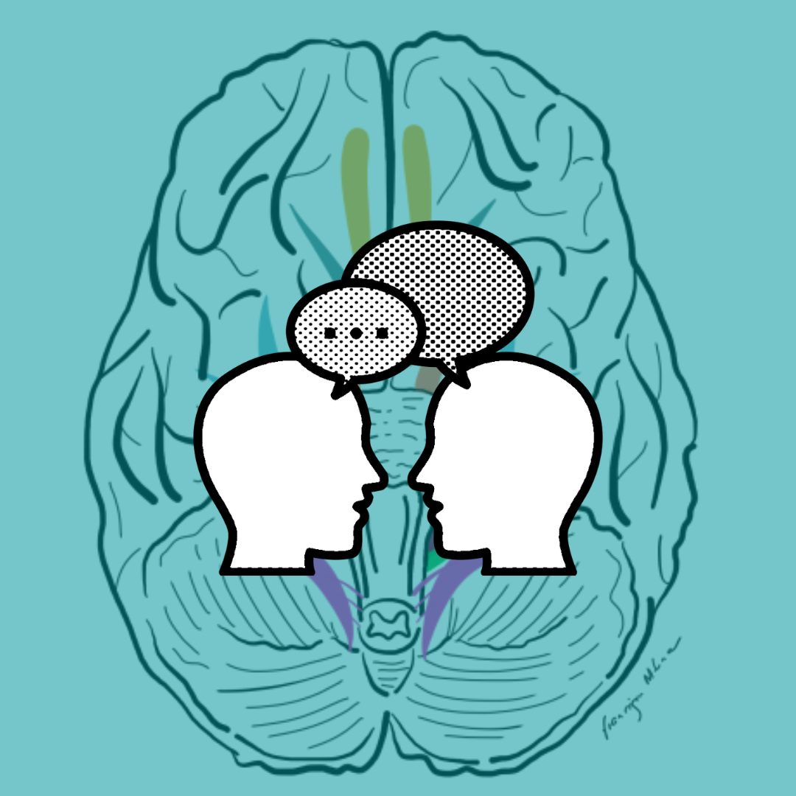
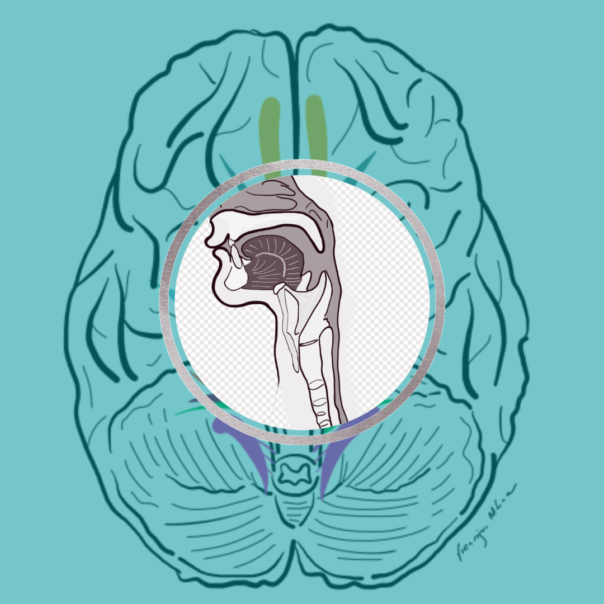
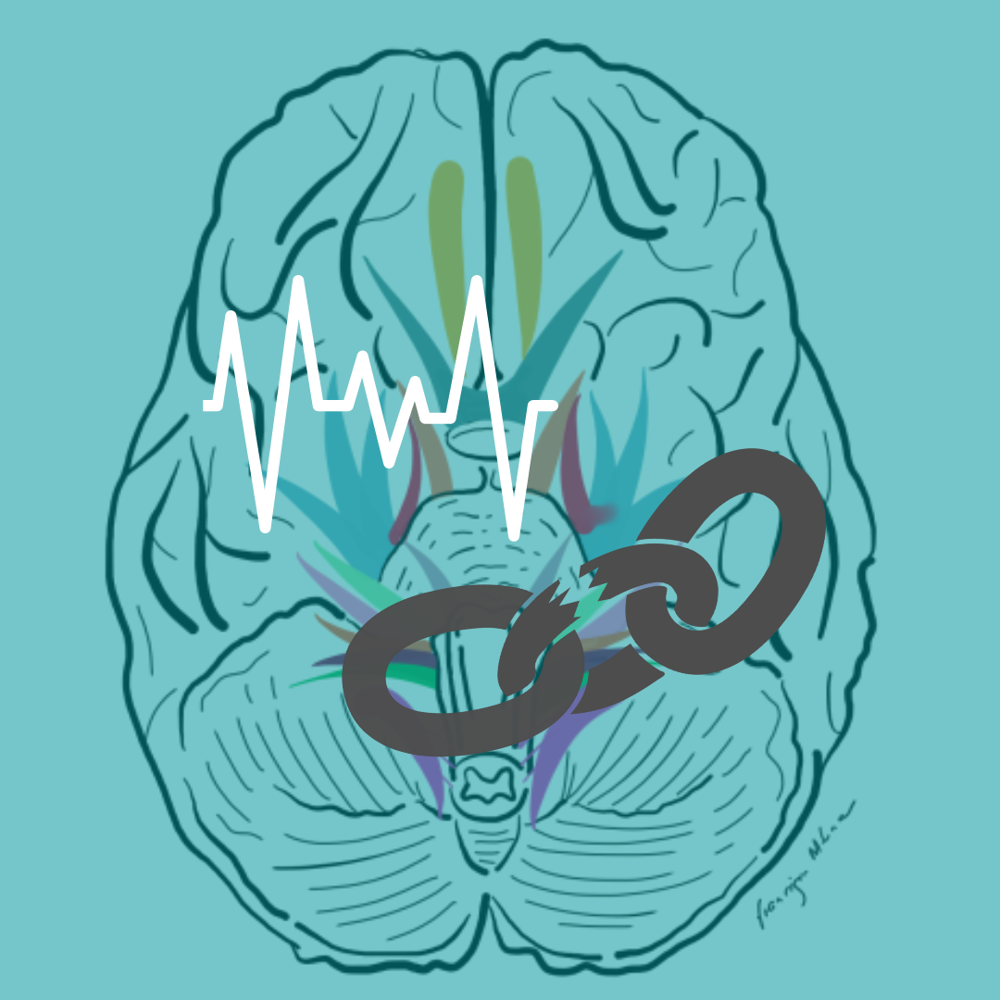
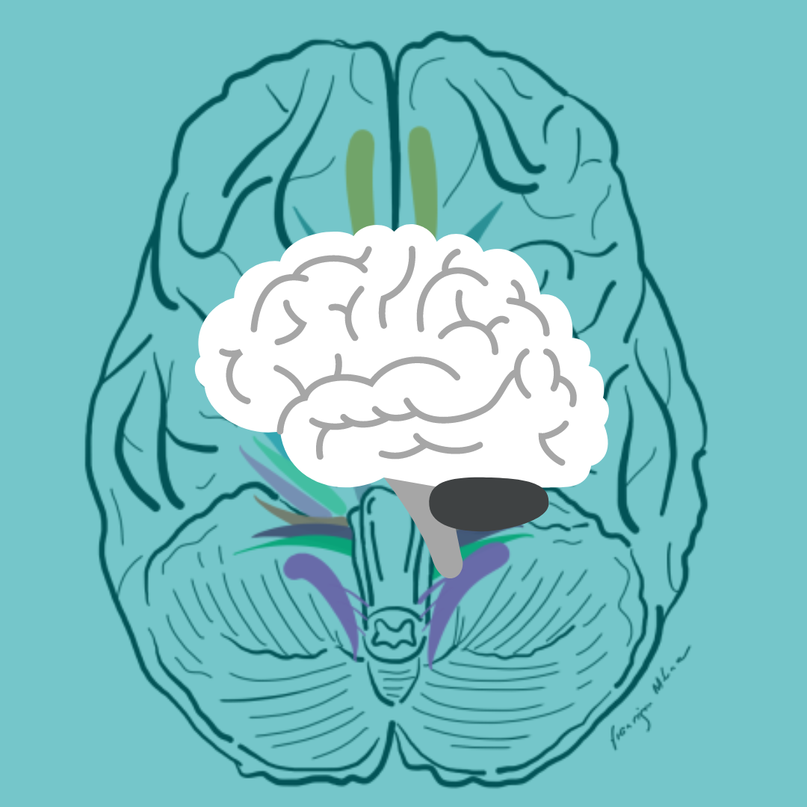

Capacidades
Logopedia dirigida a niños y adultos donde abordamos una gran variedad de problemas, trastornos y dificultades:

- Alteraciones en la musculatura orofacial
- Alteraciones del tono:
- hipotonía
- hipertonía
- Alteraciones en la sensibilidad:
- hipersensibilidad
- hiposensibilidad
- fisura nasolabial, fisura palatina
- parálisis faciales
- Alteraciones del tono:

- Dificultades en la alimentación, masticación y deglución
- deglución disfuncional
- malposiciones linguales
- disfagia
- disfagia neonatal
- disfagia en enfermedades neurodegenerativas
- disfagia en DCA
- presbifagia
- integración sensorial y tolerancias alimentarias
- introducción de nuevas texturas
- cambios en las vías de alimentación potenciando la alimentación oral

- Corrección de malos hábitos orales
- Asesora de lactancia
- Retraso en la adquisición del lenguaje o trastornos en la adquisición del lenguaje
- retraso simple del lenguaje
- trastorno de desarrollo del lenguaje
- expresivo
- comprensivo
- bilingüismo
- trastorno de la pragmática del lenguaje
- habilidades sociales

- Trastornos en la articulación
- trastornos de los sonidos del habla
- ininteligibilidad del habla
- disglosias
- disglosias causadas por aparatología como ortodoncias

- Dificultades en el lenguaje escrito
- dislexia
- disgrafía
- disortografía
- discalculia

- Trastornos de la fluencia del habla
- tartamudez (disfemia)
- taquilalia
- taquifemia
- mutismo selectivo

- Lesiones en las cuerdas vocales (pliegues vocales)
- disfonía
- nódulos vocales
- pólipos vocales
- edema de Reinke
- parálisis de las cuerdas vocales
- disfonía

- Trastornos en el desarrollo
- autismo
- parálisis cerebral
- síndrome de Down
- trastornos específicos del lenguaje
- déficits de atención

- Alteraciones neurológicas
- afasia
- parkinson
- esclerosis múltiple
- ELA
- ataxia
- Enfermedad de Tourette
- síndrome de Moebius